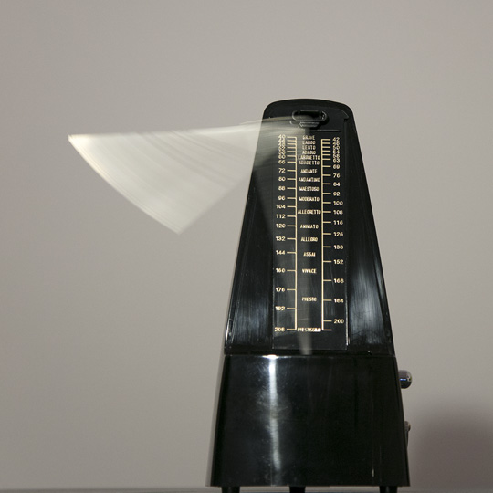
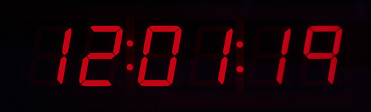

Maurits Boettger
de en

Nichts als Zeit, Performance, 2018
Das Unternehmen Time Sales Ltd. verkauft Zeit, das flüchtigste Werk aller Zeit. Nach der Wahl von Verwendungszweck und Menge bestimmt der Kunde den Wert seiner Zeit. Video

Echtzeitverzögerung, Intervention, 2018
Zu hören ist die Eröffnungsrede einer Ausstellung. Einmal im Original und gleichzeitig leicht verzögert über Lautsprecher. Zu Beginn ist der Rede noch leicht zu folgen, jedoch nimmt die Verzögerung im Laufe der Zeit zu und so wird es mit zunehmender Abweichung der Tonspuren immer schwieriger die Rede zu verstehen.

Fremdzeit, Installation, 2018
Der Puls eines Menschen übertragen auf einen Raum. Akustische und haptische Reize ermöglichen die Synchronisation des Herzschlags mit dem des abwesenden Subjekts.

Girasol, Apparat, 2017
Eine Sonnenuhr, die sich weigert das Vergehen der Zeit anzuzeigen indem sie sich immer zur Sonne ausrichtet und so zu keiner Zeit einen Schatten auf das Ziffernblatt wirft. Abweichungen aus der Zeit

Metrotom, Apparat, 2017
Ein Metronom, erweitert durch ein Chaospendel. Dieses bringt das Metronom minimal, aber unvorhersehbar aus seinem gleichmäßigen Takt. Ausstellungsdokumentation

Sanduhr (beschleunigt), Videoschleife, 2017
Eine 0,56 sekündige Videoschleife die mich zeigt, wie ich in der Wüste stehend eine Sanduhr an einer Schnur beschleunige.

Watch, Apparat, 2017
Eine Uhr, die aufhört die Zeit zu zählen, sobald man sie anschaut. Wendet man sich ab, so springt die Anzeige zur aktuellen Uhrzeit. Ausstellungsdokumentation

Coincidence, Videoschleife, 2016
On the flip of a coin
Kopf = nach rechts, Zahl = nach links. Wohin führt mich die Münze an einem Ort, an dem alle Richtungen gleich aussehen?


Audiotekt, Android Application, 2016
Eine Android Applikation, die einen Remix aus Umgebungsgeräuschen, basierend auf dem Rhythmus der Bewegung des Smartphones generiert. Download

VThcierflih, 7 Videos, 2016
Tutorials von Youtube. Ton vorwärts abgespielt - Bild rückwärts. Ungeschnitten. Playlist
 Wartezeit, Film, 2015
Wartezeit, Film, 2015
11 Minuten und 49 SekundenEin Essayfilm über das Warten, entstanden in Kolumbien

{kind=link}
{kind=link}
{kind=link}
{kind=link}
{kind=link}
{kind=link}
{kind=link}
{kind=link}
{kind=link}
{kind=link}
{kind=link}
{kind=link}
{kind=link}
{kind=link}
{kind=link}
{kind=link}
{kind=link}
{kind=link}
{kind=link}

Strange Loops, Video, 2013
Inspiriert von Douglas R. Hofstadters Beschreibung der seltsamen Schleifen befestigte ich eine Kamera auf einem Motor und beschleunigte sie um Achse ihrer Linse auf 25 Umdrehungen pro Sekunde (entsprechend der Bildfrequenz der Kamera).